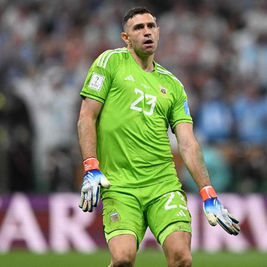

O Martínez é o goleiro da Argentina número 23. Ele foi campeão mundial na copa do mundo 2022 que no 1º jogo perderam da Arabia Saudita mas na final ele salvou Argentina com uma defesa espetacular e nas penalidades, ele defendeu 1 e foi pra fora 1 e ele ganhou o prêmio de melhor goleiro do mundo. E atualmente joga no Aston Villa, goleiro número 1.
Com a Argentina campeã da Copa do Mundo, o goleiro da seleção albiceleste garantiu a "Luva de Ouro", que celebra o melhor defensor do mundial.
No entanto, ao receber a honraria, Emiliano Martinez protagonizou uma das cenas mais inusitadas da final da Copa. Com o prêmio em mãos, o goleiro simulou um pênis com a peça e, é claro, viralizou nas redes sociais.
Apesar do sucesso da repercussão nos memes com a imagem, ninguém havia entendido direito a razão pela qual "Dibu", como também é conhecido pela torcida argentina, havia feito aquele gesto no momento em que recebeu o prêmio.Pouco tempo depois, em entrevista à rádio argentina La Red, o goleiro revelou que o ato teria sido uma espécie de resposta aos torcedores franceses:
“Fiz isso porque os franceses estavam me vaiando. A soberba comigo não vai”, afirmou Martinez. Ao longo de toda a Copa do Mundo 2022, o goleiro teve oportunidades de mostrar o seu ótimo trabalho na defesa argentina através de grandes defesas em jogos decisivos.
Com a disputa da grande final chegando às penalidades máximas, Martinez ainda conseguiu fazer uma defesa e se consagrar como uma das figuras mais importantes na conquista do tricampeonato da Argentina.
“[Dedico o título] à minha família. Venho de um lugar muito humilde, fui muito jovem para a Inglaterra. Quero dedicar a eles”, declarou o goleiro argentino ao final da entrevista.
